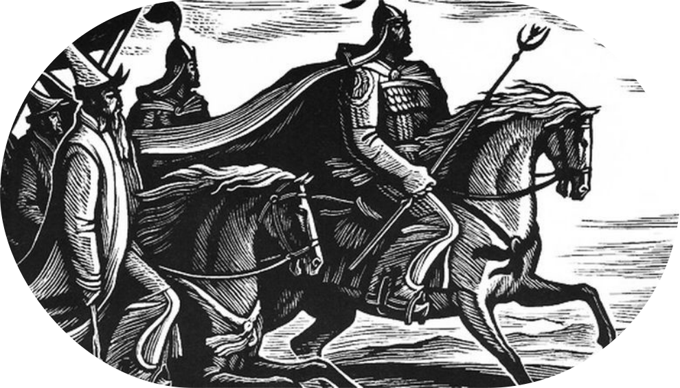
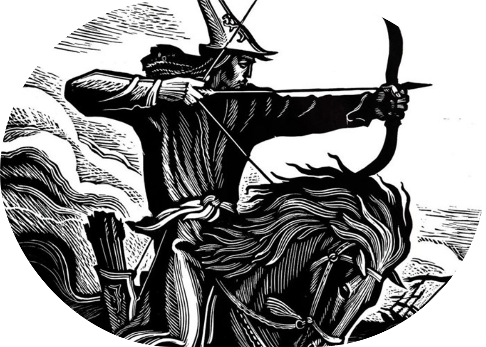

Мана́с (кырг. Манас) — герой одноимённого кыргызского эпоса, легендарный богатырь, объединивший кыргызов. Эпос о Манасе является самым длинным эпосом в мире: он в два раза больше, чем санскритский эпос «Махабхарата», а также превосходит тибетский эпос о царе Гэсэре. В варианте «Манаса», записанном от выдающегося сказителя Саякбая Каралаева, насчитывается 500 553 стихотворных строки.
Эпос «Манас» занимает особое место в мировой литературе и является крупнейшим произведением устного народного творчества. Он сочетает в себе историческую действительность и мифы, передавая важнейшие ценности кыргызского народа – стремление к единству, борьбу за свободу, доблесть, преданность и любовь.
Величие этого произведения отметил Чингиз Айтматов:
«Эпос "Манас" – это прежде всего несравненное, непревзойденное художественное творение, созданное эстетическим гением кыргызского народа на почве и на основании реальных событий, фактов, героических личностей, и которое от века в век, от сказителя к сказителю отшлифовывалось, отчеканивалось, очищалось, избавлялось от лишнего груза, от чужеродных тел, поглощая в себя все новые и новые, органически необходимые компоненты-новообразования, и, наконец, достигло сегодняшних недосягаемых высот своего совершенства.»
Эпос состоит из трёх частей:
- Первая часть повествует о самом Манасе, его подвигах, объединении кыргызских племён и борьбе за их свободу.
- Вторая часть рассказывает о сыне Манаса — Семетее, о его детстве, взрослении и битвах с врагами.
- Третья часть посвящена внуку Манаса — Сейтеку, его героическому пути, борьбе с врагами и восстановлению справедливости.
Часть 1. Манас – великий богатырь
Легенды и народные предания, которые легли в основу эпоса гласят, что когда кыргызы были изгнаны со своей Родины китайскими воинами, они переселились на территорию Алтая. Там, среди них родился великий батыр – Манас. С детских лет в нём проявляются необычные качества, он отличается от всех своих сверстников необычайной физической силой, озорством и щедростью. Слава о нём разносится далеко за пределы Алтая.
Когда китайский император узнаёт о Манасе и его силе, он отправляет на его уничтожение отряд воинов, но Манас разбил войско противников и, объединив кыргызов, отвоевал родные территории. Таким образом, Манас для кыргызского народа – легендарный богатырь, который объединил все племена и вернул им Родину.

Часть 2. Семетей – наследник великого воина
После смерти Манаса его жена Каныкей была вынуждена скрыться вместе с сыном Семетеем. Она уехала к своим родителям, где воспитывала мальчика вдали от войны и тревог.
Семетей вырос, не зная, кем был его отец. Но когда правда открылась, он решил вернуться на земли кыргызов и отомстить за смерть Манаса. Он собрал верных друзей и совершил множество подвигов, доказав, что достоин своего великого наследия.
Однако среди кыргызов нашлись завистники, которые устроили заговор против Семетея. Из-за предательства он исчез.
Часть 3. Сейтек – продолжение рода Манаса
Третья часть эпоса, «Сейтек», рассказывает о внуке Манаса. Сейтек вырос среди врагов отца, не зная своего истинного происхождения.
Когда он узнал правду, то решил последовать судьбе деда и отца: изгнать врагов, объединить кыргызов и вернуть им мир. В результате долгих испытаний и сражений Сейтек сумел восстановить справедливость и сплотить народ.
Эпос «Манас» не только повествует о великих сражениях, но и передаёт культурные ценности кыргызского народа. В нём отражены любовь, преданность и уважение к семье, которые передаются из поколения в поколение. Это произведение остаётся важнейшим символом кыргызской культуры, объединяя прошлое и настоящее народа.

Семь заветов Манаса
Эпос «Манас» можно рассматривать не только как героическое повествование, но и как энциклопедию кочевой жизни кыргызского народа. В нём заложены важные философские и нравственные принципы, которые передаются из поколения в поколение. Эти принципы воплощены в Семи заветах Манаса, которые представляют собой основу национального самосознания кыргызов:
- Единство и сплоченность нации — только в единстве народ способен преодолеть любые испытания.
- Межнациональное согласие, дружба и сотрудничество — уважение к представителям разных народов делает государство сильнее.
- Национальная честь и патриотизм — любовь к своей Родине и уважение к её истории ведут к процветанию.
- Через кропотливый труд и знания – к процветанию и благосостоянию — развитие народа возможно только через образование и трудолюбие.
- Гуманизм, великодушие, терпимость — стремление к справедливости и состраданию делает общество гармоничным.
- Гармония с природой — бережное отношение к окружающему миру является залогом устойчивого будущего.
- Укрепление и защита кыргызской государственности — сохранение независимости и национальных традиций остаётся важнейшей задачей для каждого кыргыза.
Таким образом, эпос «Манас» – это не просто история о героях, но и отражение национального духа кыргызов. В нём описаны не только битвы, но и духовные ценности народа, передающиеся из поколения в поколение. Семь заветов Манаса остаются важнейшими принципами кыргызской культуры, а сам эпос продолжает вдохновлять людей своей мудростью, героизмом и идеей единства.